# CTFshow 卷王杯 wp
# 简单的 re
下载文件查看信息， **ELF,64 位，UPX 壳 **
因为用的 wsl 环境，所以直接远程动态调试手动脱壳
# 记录一次脱壳
使用 wsl&windows 远程调试，wsl 的 ip 地址是一直在变化的，所以每次启动 wsl 时都得查看 wsl 的 ip 地址
ifconfig |
然后启动 ida 目录下的 linux_server64，IDA 端开启动态调试
因为直接启动程序显示跳飞，所以直接在第一个函数调用处下断点
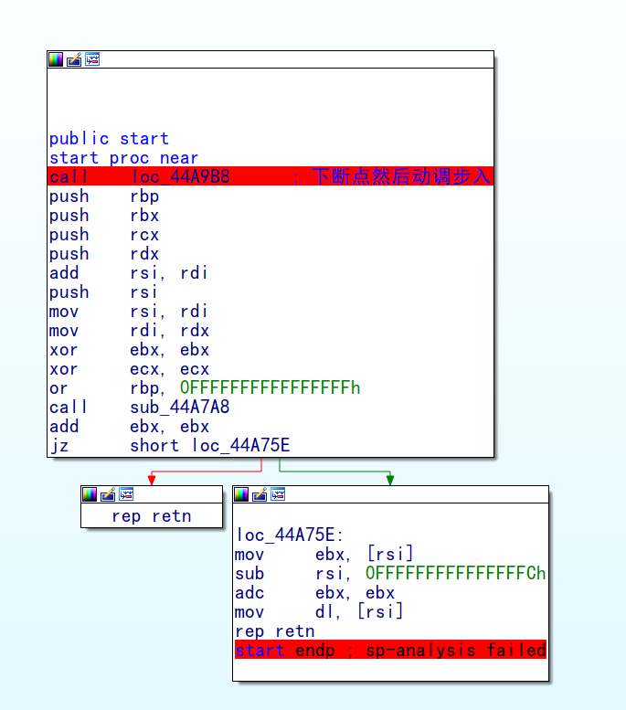!
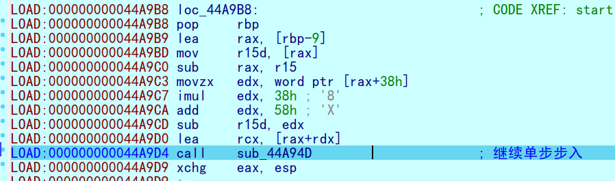
遇到循环直接跳过， 下断点然后 F9
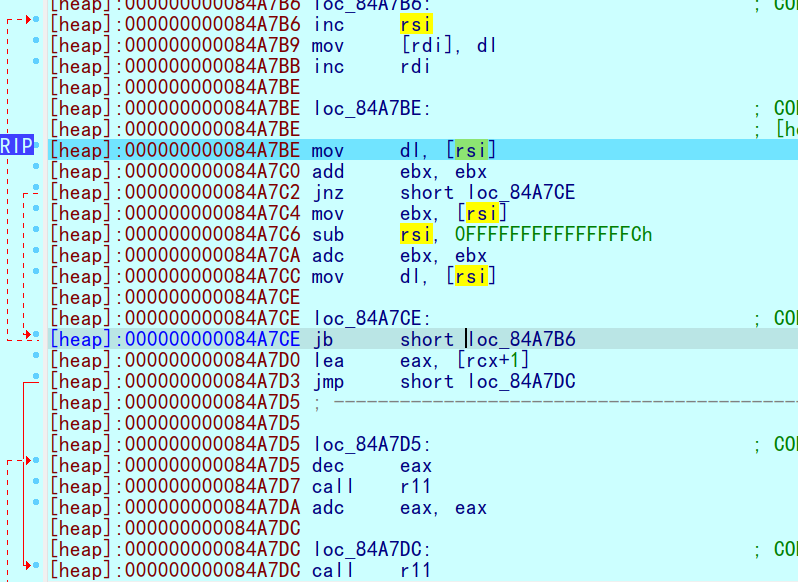
接着一路 F8，
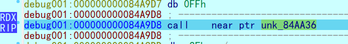
到这里 F7 步入，进入该函数之后一路 F7，就能在函数末尾看到一个比较大的跳转
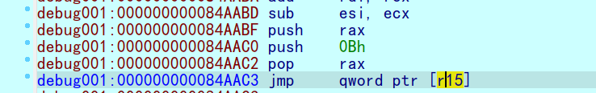
运行到此处，然后查看 R15 的值
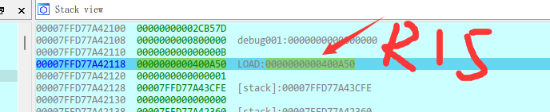
指向 0x400A50, 继续执行
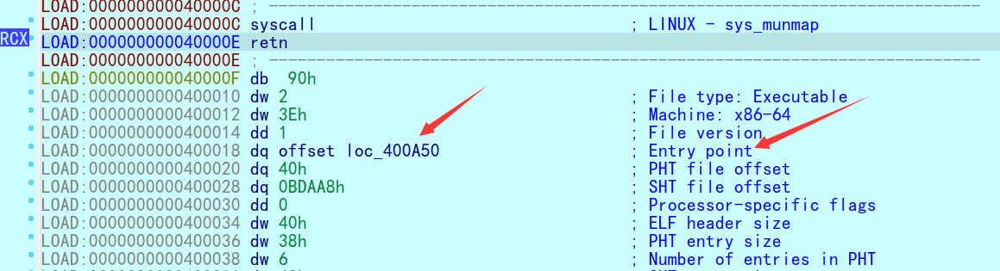
到这里之后 F8 步过
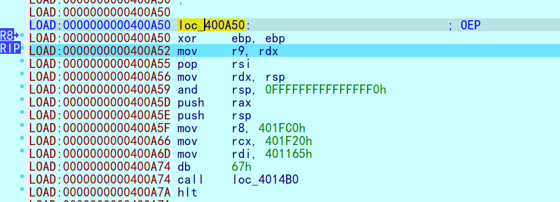
接着我们发现我们到了 OEP 的地址，也是之前堆栈中的地址。找到 OEP 后，用脚本将脱壳后的文件 dump 出来
#include <idc.idc>
#define PT_LOAD 1
#define PT_DYNAMIC 2
static main(void)
{
auto ImageBase,StartImg,EndImg;
auto e_phoff;
auto e_phnum,p_offset;
auto i,dumpfile;
ImageBase=0x400000;
StartImg=0x400000;
EndImg=0x0;
if (Dword(ImageBase)==0x7f454c46 || Dword(ImageBase)==0x464c457f )
{
if(dumpfile=fopen("G:\\dumpfile","wb")) //这里的地址是dump出的文件保存地址
{
e_phoff=ImageBase+Qword(ImageBase+0x20);
Message("e_phoff = 0x%x\n", e_phoff);
e_phnum=Word(ImageBase+0x38);
Message("e_phnum = 0x%x\n", e_phnum);
for(i=0;i<e_phnum;i++)
{
if (Dword(e_phoff)==PT_LOAD || Dword(e_phoff)==PT_DYNAMIC)
{
p_offset=Qword(e_phoff+0x8);
StartImg=Qword(e_phoff+0x10);
EndImg=StartImg+Qword(e_phoff+0x28);
Message("start = 0x%x, end = 0x%x, offset = 0x%x\n", StartImg, EndImg, p_offset);
dump(dumpfile,StartImg,EndImg,p_offset);
Message("dump segment %d ok.\n",i);
}
e_phoff=e_phoff+0x38;
}
fseek(dumpfile,0x3c,0);
fputc(0x00,dumpfile);
fputc(0x00,dumpfile);
fputc(0x00,dumpfile);
fputc(0x00,dumpfile);
fseek(dumpfile,0x28,0);
fputc(0x00,dumpfile);
fputc(0x00,dumpfile);
fputc(0x00,dumpfile);
fputc(0x00,dumpfile);
fputc(0x00,dumpfile);
fputc(0x00,dumpfile);
fputc(0x00,dumpfile);
fputc(0x00,dumpfile);
fclose(dumpfile);
}else Message("dump err.");
}
}
static dump(dumpfile,startimg,endimg,offset)
{
auto i;
auto size;
size=endimg-startimg;
fseek(dumpfile,offset,0);
for ( i=0; i < size; i=i+1 )
{
fputc(Byte(startimg+i),dumpfile);
}
}
在 OEP 处打开脚本 dump. 生成脱壳后的原文件
# 解题
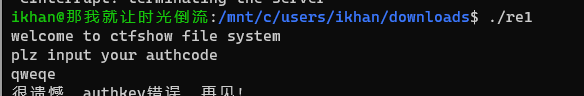
运行之后进入 IDA，查找字符串，到达主函数
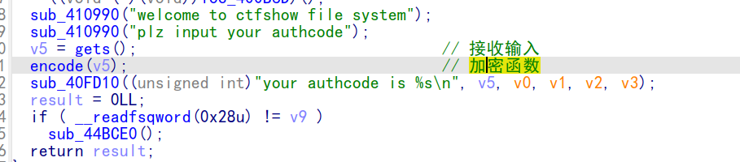
进入加密函数 ，、
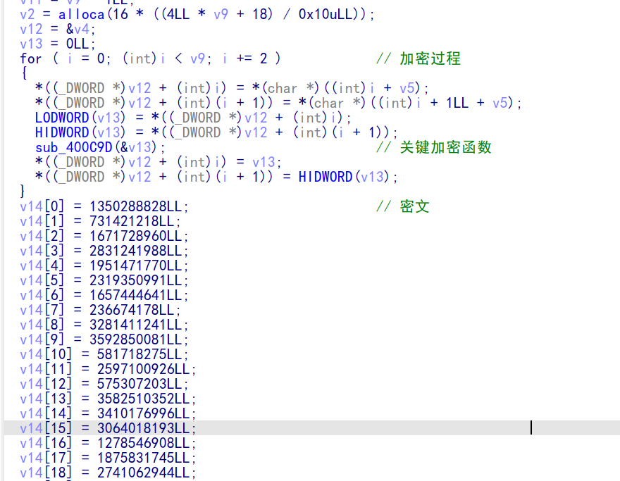
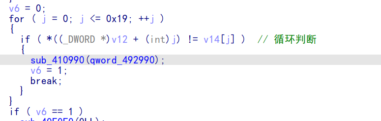
可以判断后面的 V14 数组大概率是密文，后面是判断，而前面的循环就是加密过程了，进入关键加密函数，发现是明显的 TEA 加密算法，所以直接可以写逆向脚本
#include <stdio.h> | |
int main() | |
{ | |
int delta = 0; | |
for(int i=0;i<=31;++i) | |
{ | |
delta +=0x6F361F7C; | |
} | |
long long int v14[27]={0}; | |
v14[0] = 0x507BC5BC; | |
v14[1] = 0x2B989A22; | |
v14[2] = 0x63A48F40; | |
v14[3] = 2831241988; | |
v14[4] = 0x7451189A; | |
v14[5] = 0x8A3E7CCF; | |
v14[6] = 0x62CA9921; | |
v14[7] = 0xE1B5C82; | |
v14[8] = 0xC3965CA9; | |
v14[9] = 0xD6268AA1; | |
v14[10] = 0x22AC5103; | |
v14[11] = 0x9ACC9D7E; | |
v14[12] = 0x224A7DC3; | |
v14[13] = 0xD588C510; | |
v14[14] = 0xCB432BE4; | |
v14[15] = 0xB6A13511; | |
v14[16] = 0x4C3513DC; | |
v14[17] = 0x6FCEEBC1; | |
v14[18] = 0xA3614D20; | |
v14[19] = 0x87C441CC; | |
v14[20] = 0xA1F95799; | |
v14[21] = 0x3E6DD14A; | |
v14[22] = 0x6F28852F; | |
v14[23] = 0x52AC745F; | |
v14[24] = 0x9190AC59; | |
v14[25] = 0x16DE2CFB; | |
unsigned int v3,v4; | |
int a[4]={111,54,31,124}; | |
for(int i=0;i<26;i+=2) | |
{ | |
int num= delta; | |
v3 = v14[i]; | |
v4 = v14[i+1]; | |
for(int k=0;k<=31;k++) | |
{ | |
v4 -=(v3+num)^((v3<<4)+a[2])^((v3>>5)+a[3]); | |
v3 -=(v4+num)^((v4<<4)+a[0])^((v4>>5)+a[1]); | |
num -=0x6F361F7C; | |
} | |
v14[i]=v3; | |
v14[i+1]=v4; | |
} | |
for(int i=0;i<=25;i++) | |
{ | |
printf("%c",v14[i]); | |
} | |
return 0; | |
} | |
/* | |
output：ctfshow{just_a_simple_re} | |
*/ |
所以最后的 flag 是
ctfshow{just_a_simple_re}
# babyOC
烷基八氮
ubuntu 支持的 libgnustep-base 最高版本是 1.26，但是这个文件需要的版本是 1.28
而且重要的 Objective-C 使用动态运行时类型，在此基础上增加了面向对象编程语言的特性以及 Smalltalk 消息机制
这种消息特性决定逆向 objective-c 必须通过动态调试来得知函数的作用
贴一个参考的大佬博客，也是该题一血
[babyOC_wp](「CTFSHOW」Rev 随缘更新 (trackonyou.top))
使用 IDA
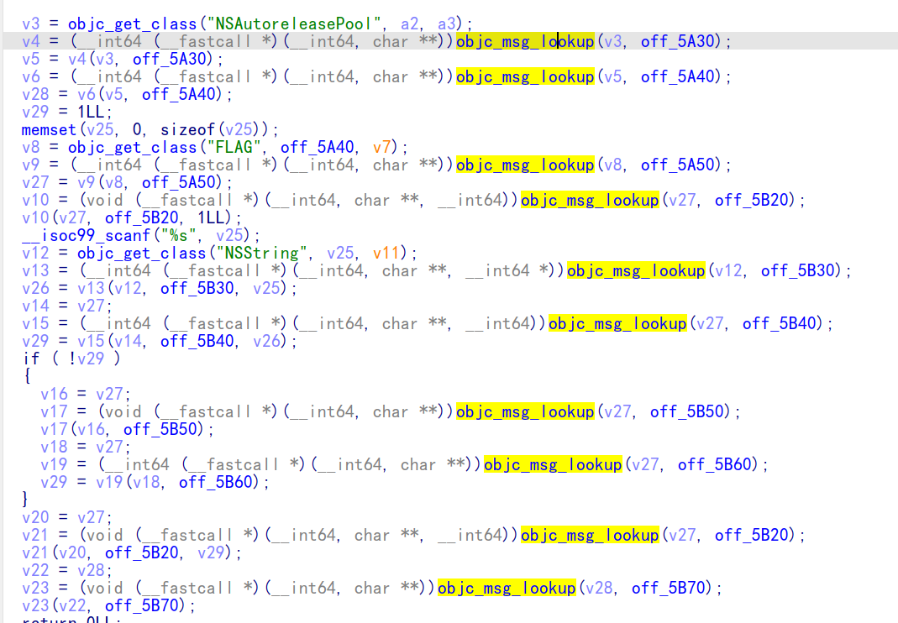
发现 objc_msg_lookup 函数 频繁出现
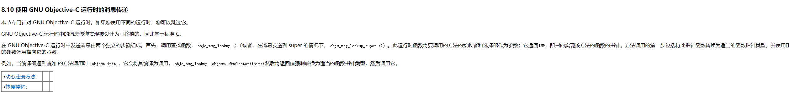
大意就是接收参数，返回一个函数指针，个人猜测可能就是 objective-c 特有的 Smalltalk 消息机制，通过查看函数的第二个参数就能大概知道函数的作用，但是具体实现得通过动态调试分析
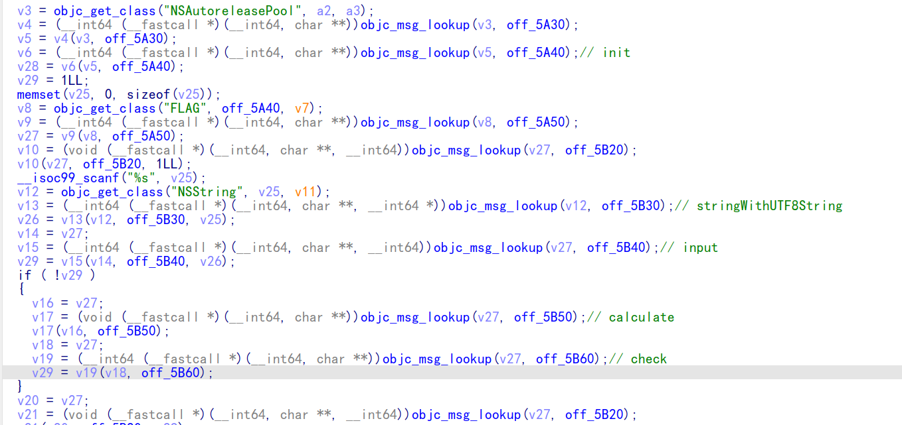
查看 init xref 进入函数
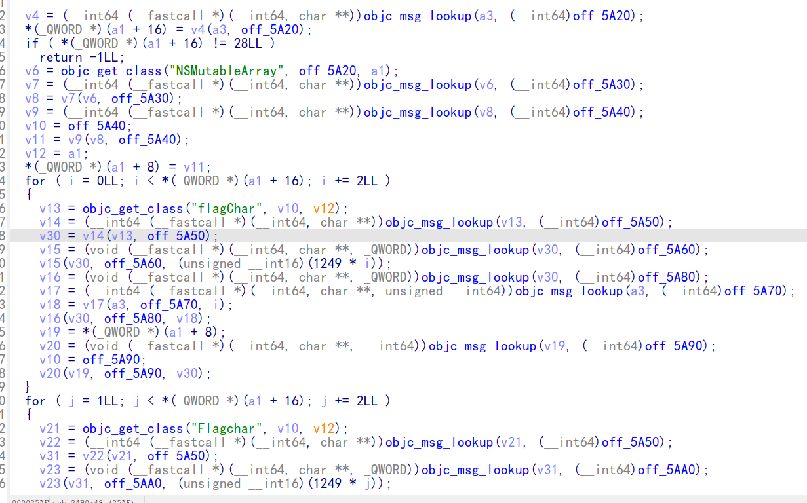
这里就是初始化的函数（加密）
有两个大循环 ，应该是分别对奇数位和偶数位运算，具体运算还是得靠动态调试
而且密文也得靠动态调试得到
套用大佬的 keygen
data = [1270, 2767, 5549, 9672, 11938, 16093, 29864, 30379, 22184, 20690, 25002, | |
65039, 65793, 97983, 100411, 67904, 88053, 28147, 18776, 71764, 127654, | |
39994, 30276, 33151, 49377, 62682, 128398, 32406] | |
key = [0x4E1 * i for i in range(28)] | |
for i in range(1, 28): | |
if i % 2 == 1: | |
data[i] ^= data[i - 1] | |
else: | |
data[i] -= data[i - 1] | |
for i in range(26, -1, -1): | |
if i % 2 == 0: | |
data[i] ^= data[i + 1] | |
else: | |
data[i] -= data[i + 1] | |
for i in range(28): | |
print(chr(data[i] ^ key[i]), end='') | |
''' | |
output: ctfshow{babyＯｂｊＣ,你真的解出来了TQL} | |
''' |
ctfshow {babyＯｂｊＣ, 你真的解出来了 TQL}